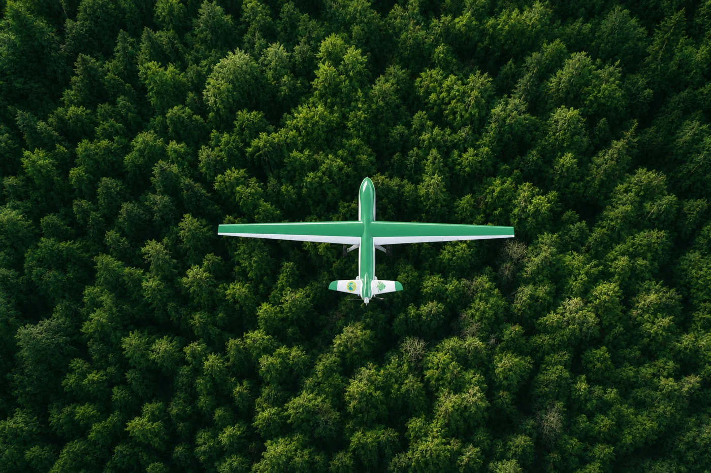
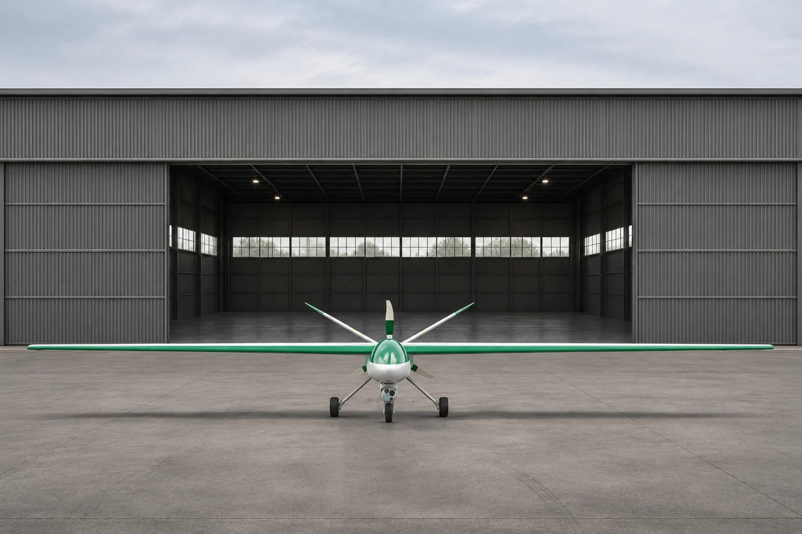

View the aircraft from the front

BSc graduation project · MECH390
A UAV for early forest fire detection
Spotting a fire early means watching a large area for a long time. For my senior project, our team designed a long-endurance aircraft around that need. A high-aspect-ratio wing supported efficient patrol flight, while a rear-mounted propeller left room for a camera under the nose.
We studied how the aircraft would fly and how its fuselage and landing gear would carry load. The project culminated in a preliminary design.